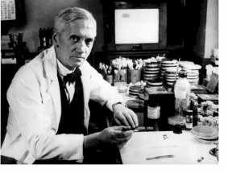

45 ALEXANDER FLEMING 1881-1955
Alexander
Fleming, penemu penicillin, lahir tahun 1881 di Lochfield,
Skotlandia. Setamat dari sekolah kedokteran Rumah Sakit St.
Mary di London, Fleming menceburkan diri dalam bidang
penyelidikan imunitas. Belakangan, selaku dokter tentara
pada Perang Dunia ke-1, dia mempelajari ihwal infeksi pada
luka dan dia menemukan bahwa banyak antiseptik merusak sel
badan lebih daripada dia merusak kuman. Fleming sadar, apa
yang diperlukan adalah sesuatu yang selain membunuh bakteri
tetapi tidak merusak dan berbahaya buat sel tubuh
manusia.
Sesudah perang, Fleming kembali ke rumah sakit St. Mary.
Tahun 1922, selagi melakukan penyelidikan di situ dia
menemukan sesuatu yang disebutnya lysozyme. Lysozyme
diproduksi oleh tubuh manusia, terdiri dari komponen yang
terdiri baik lendir maupun titik cairan air mata yang tidak
mengandung bahaya bagi sel tubuh manusia. Komponen itu akan
melumpuhkan kuman tertentu, tetapi sayangnya tidak efektif
pada kuman khusus yang berbahaya bagi manusia. Penemuan itu,
betapapun menariknya, tidaklah punya makna yang besar.
Baru tahun 1928 Fleming berhasil menemukan sesuatu yang
berarti. Laboratoriumnya membiakkan bakteri
"staphylococcus", dibiarkan terbuka begitu saja di udara dan
menjadi kotor serta busuk. Fleming menemukan dalam pembiakan
sekitar pembusukan itu, bakteri menjadi cair. Dengan cepat
dia menyimpulkan bahwa pembusukan itu menghasilkan sesuatu
substansi yang beracun terhadap bakteri "staphylococcus".
Segera dia mampu menunjukkan bahwa substansi serupa berada
pada pertumbuhan pelbagai jenis bakteri yang berbahaya.
Substansi itu --yang diberi nama penicilin sesudah kejadian
pembusukan (penicillium notatum)-- bukanlah merupakan cairan
baik bagi manusia maupun binatang.
Hasil penemuan Fleming ini disiarkan tahun 1929, tetapi
pada mulanya tidak banyak menarik perhatian. Fleming
mengemukakan bahwa penicilin punya arti penting buat
pengobatan. Namun, dia sendiri tak mampu mengembangkan
teknik untuk memurnikan penicilin, dan lebih dari sepuluh
tahun lamanya obat yang penting itu tetap tinggal
terlantar.
Akhirnya, di ujung tahun 1930-an, dua penyelidik bidang
kedokteran Inggris, Howard Walter Florey dan Ernst Boris
Chain menemukan tulisan Fleming. Mereka mengkaji kembali
hasil kerja Fleming dan menyempurnakan dan membikin jelas
hasilnya. Mereka kemudian memurnikan penicilin, mencoba
substansi itu pada laboratorium binatang. Tahun 1941 mereka
mencoba penicillin pada manusia yang menderita sakit.
Percobaan mereka dengan jelas membuktikan bahwa obat baru
ini punya potensi yang menakjubkan.
Atas dorongan pemerintah Inggris dan Amerika, pabrik
obat-obatan kini mulai terjun dan menaruh perhatian dan
dengan cepat mengembangkan metode memproduksi penicillin
dalam jumlah besar-besaran. Mulanya, penicillin cuma
disediakan buat penggunaan para korban perang, tetapi tahun
1944 dapat digunakan oleh masyarakat sipil di Inggris dan
Amerika.
Tatkala perang rampung di tahun 1945, penggunaan
penicillin sudah menyebar ke seluruh dunia.
Penemuan penicillin amat menggugah penyelidikan bidang
antibiotik lain, dan penyelidikan berikutnya telah
membuahkan pelbagai "obat ajaib" namun, penicillin tetap
merupakan antibiotik yang paling luas di pakai.
Satu sebab yang membikin keunggulannya langgeng adalah:
penicillin efektif untuk melawan pelbagai rupa mikro
organisme yang berbahaya. Obat ini berguna buat penyembuhan
sipilis, gonorrhea, diphtheria, juga pelbagai macam
arthiritis, bronchitis, scarlet, lever, gangrene dan banyak
lagi.
Keuntungan penicillin lainnya adalah relatif aman
dipakai. Dosis 50.000 unit penicillin efektif buat melawan
pelbagai infeksi. Dan suntikan 100 juta unit penicillin
sehari tak menimbulkan efek apa-apa. Meski sebagian kecil
orang alergi terhadap penicillin, buat kebanyakan orang
merupakan obat yang bisa mematangkan daya tahan dan
pengamanan.
Sejak penicillin telah menyelamatkan jutaan nyawa orang
dan pasti akan menyelamatkan nyawa lebih banyak lagi di masa
depan, sedikit sekali orang yang berbeda faham mengenai arti
penicillin penemuan Fleming. Tempat yang tepat baginya dalam
daftar urutan ini tergantung, tentu saja, sampai seberapa
jauh orang memberi arti kepada peranan yang diberikan oleh
Florey dan Chain. Saya rasa, sebagian terpokok jasa dan
peranan ada pada Fleming yang telah menemukan penemuan yang
esensial. Tanpa Fleming, orang memerlukan waktu bertahun
untuk menemukan penicillin. Begitu dia mengumumkan hasil
penemuannya, cepat atau lambat akan terjadi juga
penyempurnaan-penyempurnaan dan memproduksinyasecara lebih
murni.
Fleming kawin dan hidup bahagia dengan karunia satu anak.
Tahun 1945 dia meraih Hadiah Nobel untuk jasa penemuannya,
dan membagi hadiah itu kepada Florey dan Chain. Dia tutup
mata tahun 1955.
|